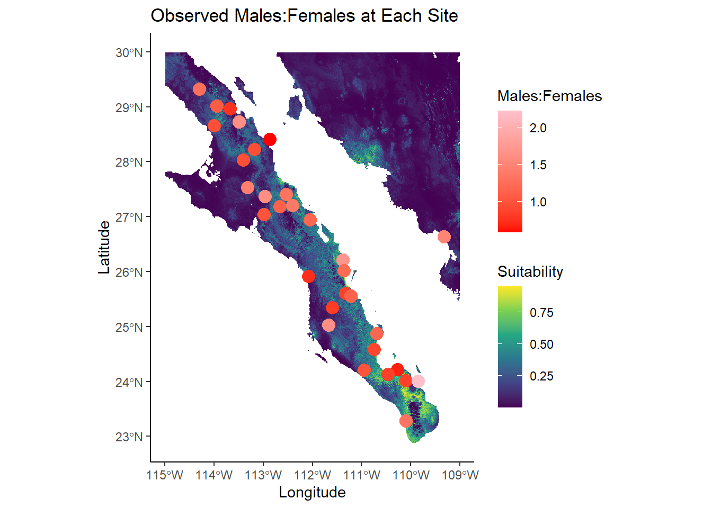
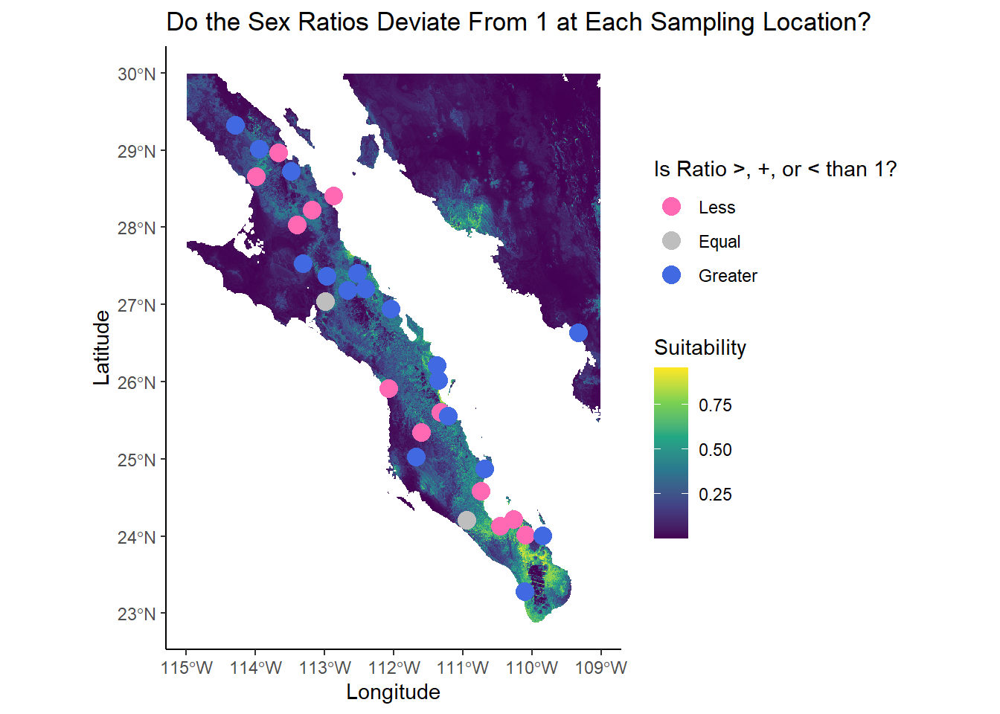
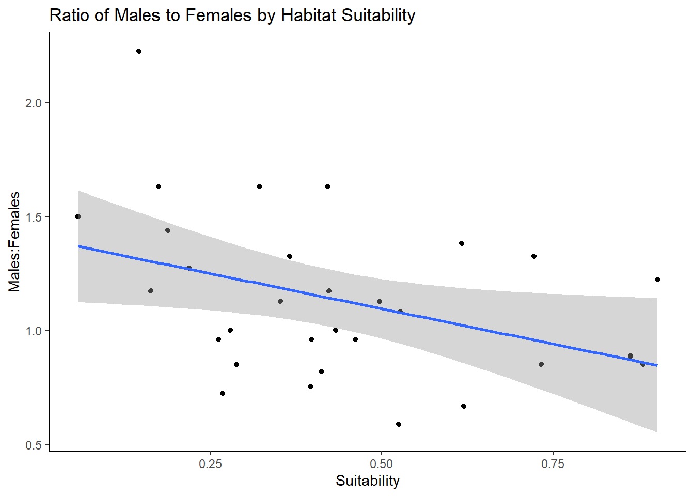
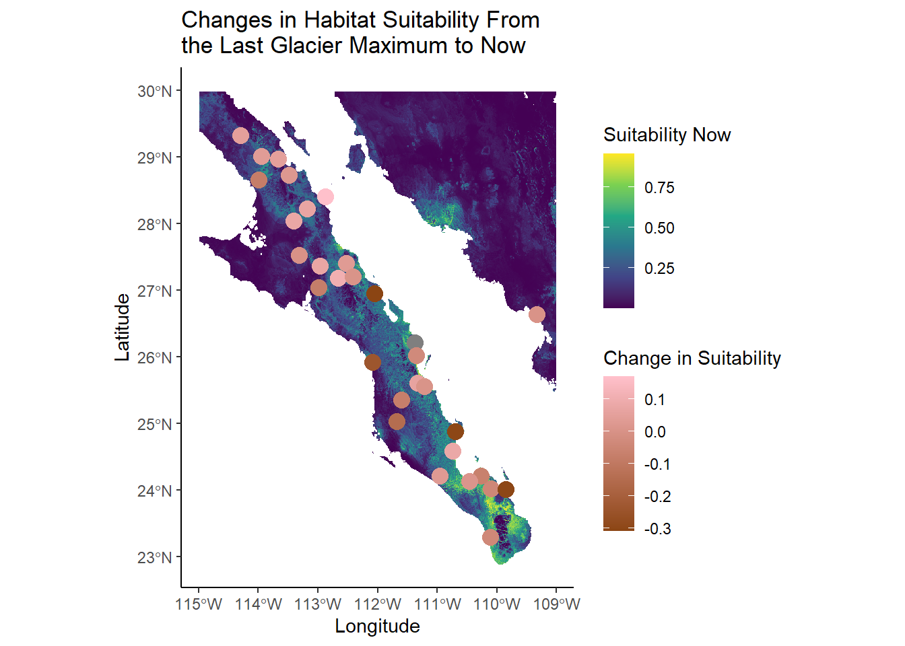
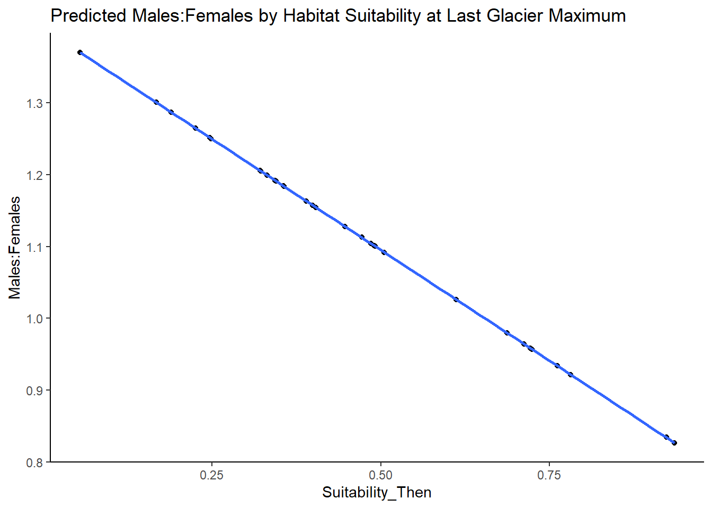
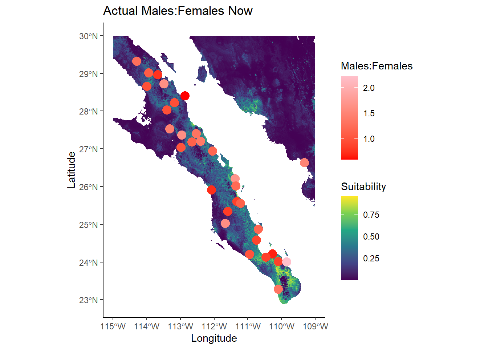
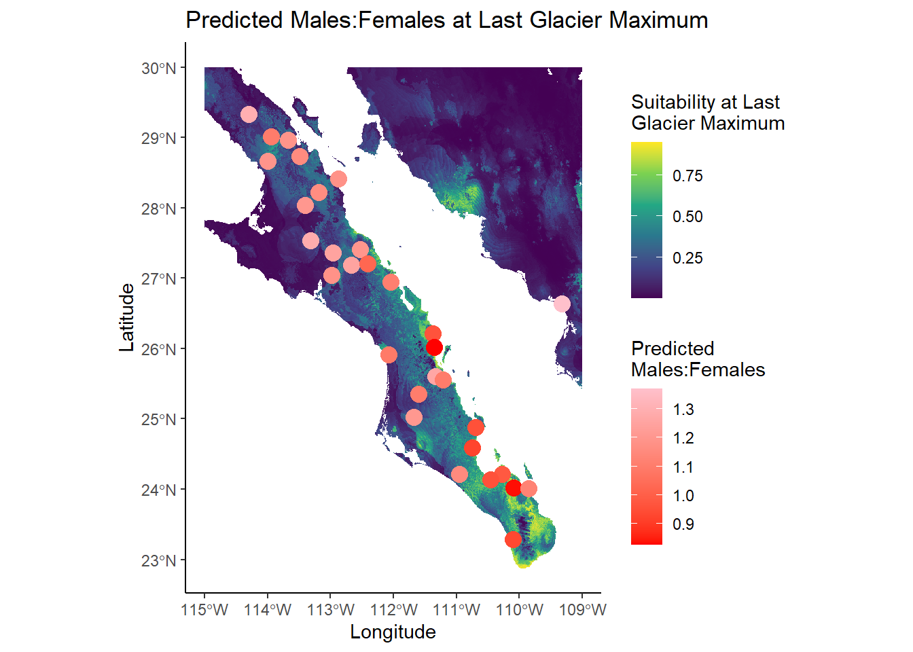

Sex Ratios of the Sonora Desert Bark Beetle from the Last Glacier Maximum to Now
Methods
For this analysis, four data sets were used; one representing the location of each sampling site, one with counts of each animal with data such as sex, Phenotype A, and Phenotype B, one raster representing habitat suitability now, and one raster representing predicted habitat suitability at the last glacier maximum. To complete the analysis, the data set with counts of each animal was sorted by site, then sex, with counts of the number of animals under each category. Then, the data was pivoted wider to have a column for count of males and females for each row (site).
A Male:Female ratio was created by dividing the number of males by the number of females at each sampling location. Mean of Phenotype A and mean of Phenotype B at each sampling location were calculated and then added to the created data frame. Then, the data representing the location of each sampling site was added to the created data frame, which was then mutated into a SF. Then, for each sampling location, data was extracted from both rasters to show habitat suitability now and habitat suitability at the last glacier maximum.
A linear model was run to determine the relationship between habitat suitability at the sampling locations and the sex ratio. Addition models were run to determine if adding Phenotype A and Phenotype B improve the functional relationship over habitat suitability alone. Finally, using the linear model run on the relationship between habitat suitability and the sex ratios, predicted sex ratios during the last glacier maximum were found using the habitat suitability at the last glacier maximum.
Results
Across the different sampling sites, there were drastically different sex ratios, ranging from 0.5873016 to 2.2258065.
An equal sex ratio would be 1, and many sites deviated from an equal proportion of males and females.

Only two sites had an equal proportion of males to females, site 16 and site 18.
| Site | Suitability | Males:Females |
|---|---|---|
| 1 | 0.8810290 | 0.8518519 |
| 2 | 0.0562845 | 1.5000000 |
| 3 | 0.2185940 | 1.2727273 |
| 4 | 0.1627240 | 1.1739130 |
| 5 | 0.3651910 | 1.3255814 |
| 6 | 0.6195190 | 0.6666667 |
| 7 | 0.4125120 | 0.8181818 |
| 8 | 0.3519050 | 1.1276596 |
| 9 | 0.1744380 | 1.6315789 |
| 10 | 0.1455230 | 2.2258065 |
| 11 | 0.8625610 | 0.8867925 |
| 12 | 0.1879650 | 1.4390244 |
| 13 | 0.4214400 | 1.6315789 |
| 14 | NA | 1.7027027 |
| 15 | 0.7217000 | 1.3255814 |
| 16 | 0.4328730 | 1.0000000 |
| 17 | 0.4226090 | 1.1739130 |
| 18 | 0.2791050 | 1.0000000 |
| 19 | 0.3975000 | 0.9607843 |
| 20 | 0.7324870 | 0.8518519 |
| 21 | 0.5264130 | 1.0833333 |
| 22 | 0.3210530 | 1.6315789 |
| 23 | 0.6163620 | 1.3809524 |
| 24 | 0.2617900 | 0.9607843 |
| 25 | 0.3953470 | 0.7543860 |
| 26 | 0.2876230 | 0.8518519 |
| 27 | 0.4613570 | 0.9607843 |
| 28 | 0.2673030 | 0.7241379 |
| 29 | 0.9018780 | 1.2222222 |
| 30 | 0.4964650 | 1.1276596 |
| 31 | 0.5242670 | 0.5873016 |
There was a relationship found between habitat suitability and the sex ratio. The linear model (F = 5.0109604 on 1 and 28 DF) found a p-value of 0.0333184 and an adjusted R-squared value of 0.1215039. Because the p-value was below the significance threshold of 0.05, there was enough evidence to reject the null hypothesis that there is no relationship between habitat suitability and the sex ratio. The linear model found an intercept of 1.4038434 and a slope of -0.6173043. This means that as habitat suitability increases, the sex ratio decreases.

Multiple linear models were run including Phenotype A and Phenotype B as well as habitat suitability as a predictor for sex ratio. However, none of the models had a p-value less than 0.05, so none were significant. The inclusion of Phenotype A and Phenotype B did not improve the functional relationship over habitat suitability alone.
Since the last glacial maximum, habitat suitability has changed at each of the sampling locations. However, it has increased in some locations and decreased in others.

The sex ratio for each sampling location during the last glacial maximum was modeled using the linear model developed above.

Since the last glacial maximum, habitat suitability has changed significantly, and so, the sex ratio has also changed significantly. Many of the sites now have a lower sex ratio than the predicted sex ratio at the last glacier maximum. This could partly be because a change in climate (climate change) has changed the habitat suitability of the sampling locations.

